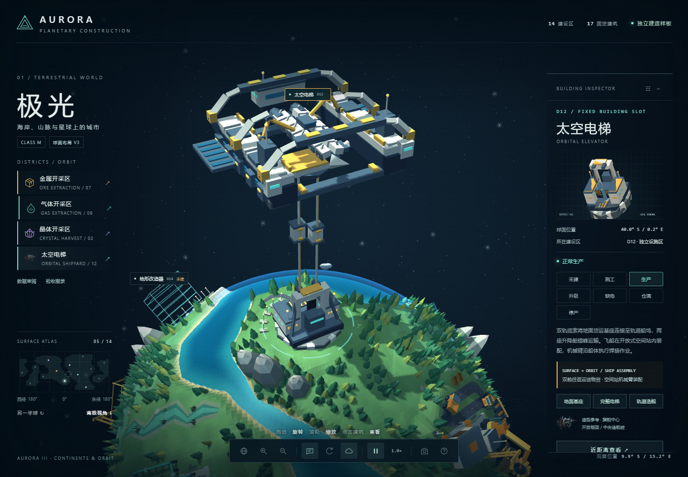
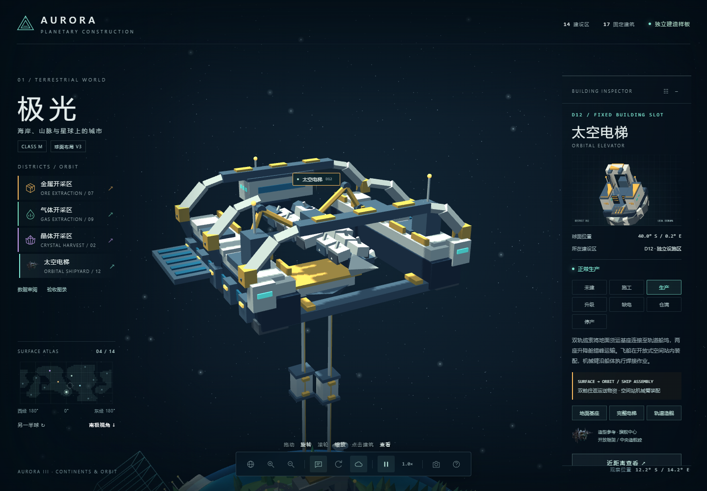
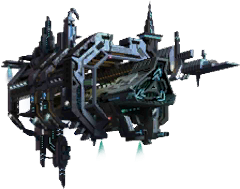
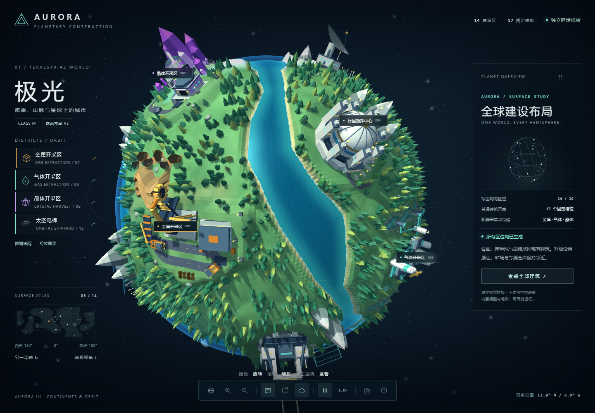
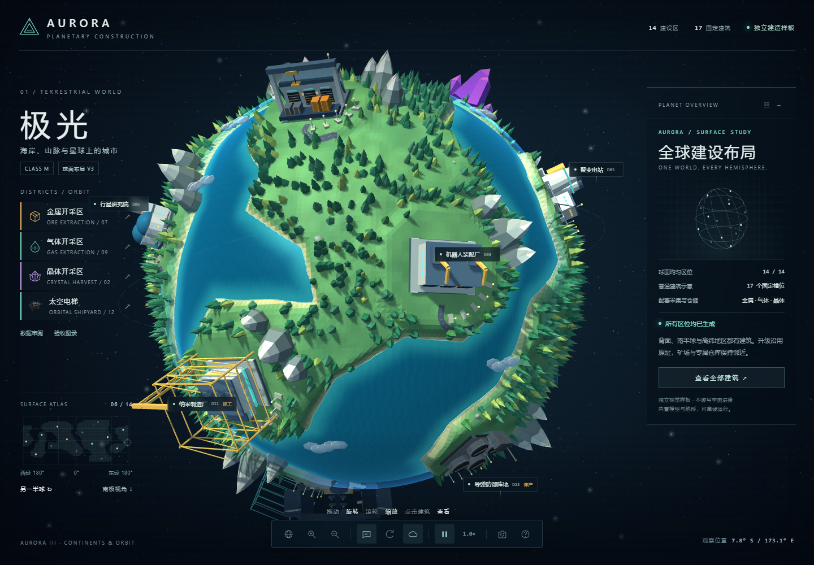
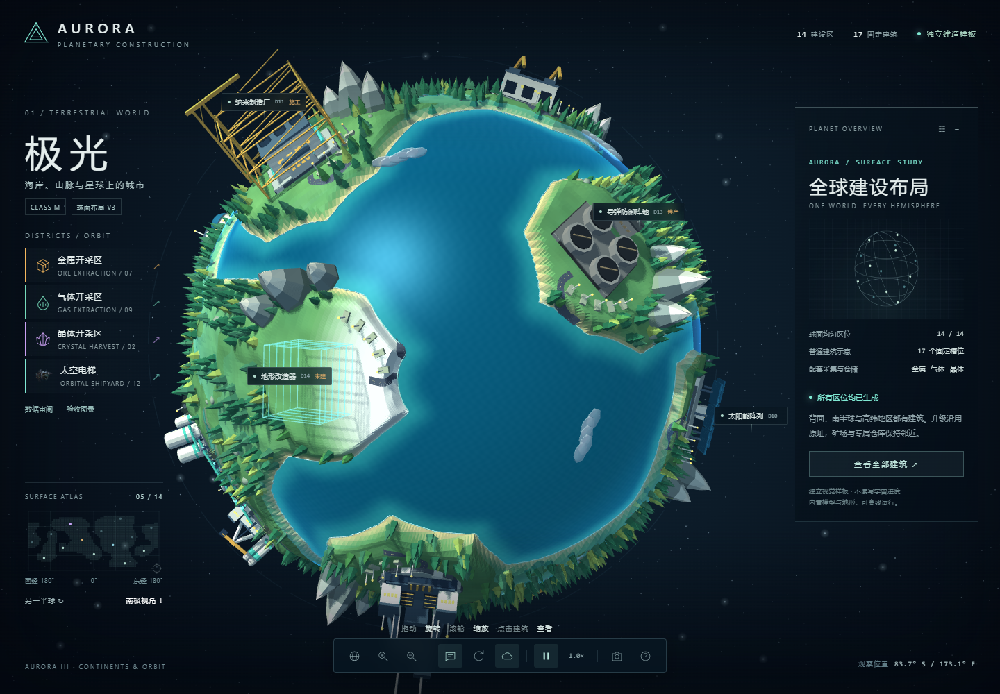
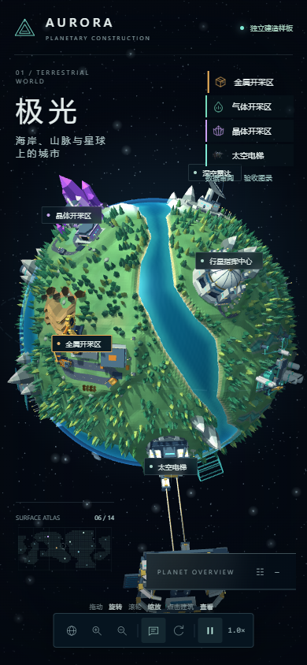

AURORA III / CONTINENTS & ORBIT
大陆、矿场与太空电梯
沿用你提供的星球画风和三类矿区。海岸改为四片连续大陆，矿区仅保留必要作业平地，以岩层、缓坡和林地接入周边；太空港改为连接地面与轨道船坞的双舱电梯，飞船在空间站中装配。
01 / ORBIT太空电梯与轨道船坞



造型参考：APK「旗舰中心」图标。保留开放船坞轮廓，以 AURORA 的象牙白、深灰蓝和暖金材质重新设计。
02 / CONTINENTS连贯大陆与全球建设区


03 / EXTRACTION三条完整采集循环
04 / INSPECTION全球查看与移动端


录像为加速展示：金属与晶体各覆盖32秒模拟作业，气体8秒，电梯60秒。独立视觉验收场景。状态、缺电与仓满控制只影响演出；正式数据仍按原审阅流程逐项批准后写入。查看上一版影像 →